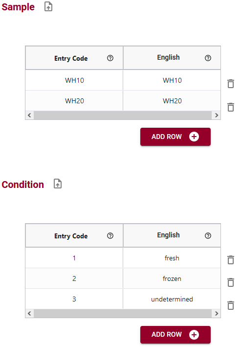

Pour chaque attribut pour lequel vous souhaitez ajouter des codes d'entrée, vous devrez spécifier le code et les libellés spécifiques à la langue. Les codes d'entrée sont sensibles à la casse. Lisez notre article de blogue pour un exemple pratique d'utilisation des codes d'entrée.
Par exemple, dans les systèmes de saisie de données financières, des codes numériques complexes peuvent être enregistrés dans l'ensemble de données. Cependant, la plupart des gens ne peuvent pas se souvenir des numéros de code spécifiques, mais ils peuvent se souvenir du nom de compte associé au code. Dans cet exemple, le code d'entrée est le code numérique attendu dans l'ensemble de données, mais vous pouvez ensuite attribuer à ce code numérique une étiquette en anglais (et dans une autre langue) pour aider les utilisateurs à saisir des données.
Un autre exemple serait un nom d'espèce où le code d'entrée spécifique peut être le nom latin du genre/de l'espèce tandis que l'étiquette en anglais peut être le nom commun.
Si vous n'avez pas besoin de créer des étiquettes spécifiques pour les codes d'entrée (par exemple, vous créez une liste de codes d'entrée de termes GO), vous pouvez copier le code d'entrée dans les colonnes de langue spécifiques à la langue.
Vous pouvez également importer vos listes de codes d'entrée à partir d'un fichier .csv ou d'un autre schéma. Cela peut vous éviter d'avoir à saisir des listes de codes d'entrée. Lisez notre article de blogue sur l'importation de codes d'entrée pour plus de détails.
Vous trouverez ci-dessous quelques exemples de codes d'entrée qui ont été saisis dans le moteur sémantique. Dans ces exemples, vous pouvez voir que les entrées et les libellés peuvent être identiques ou différents, selon les besoins de l'utilisateur.
